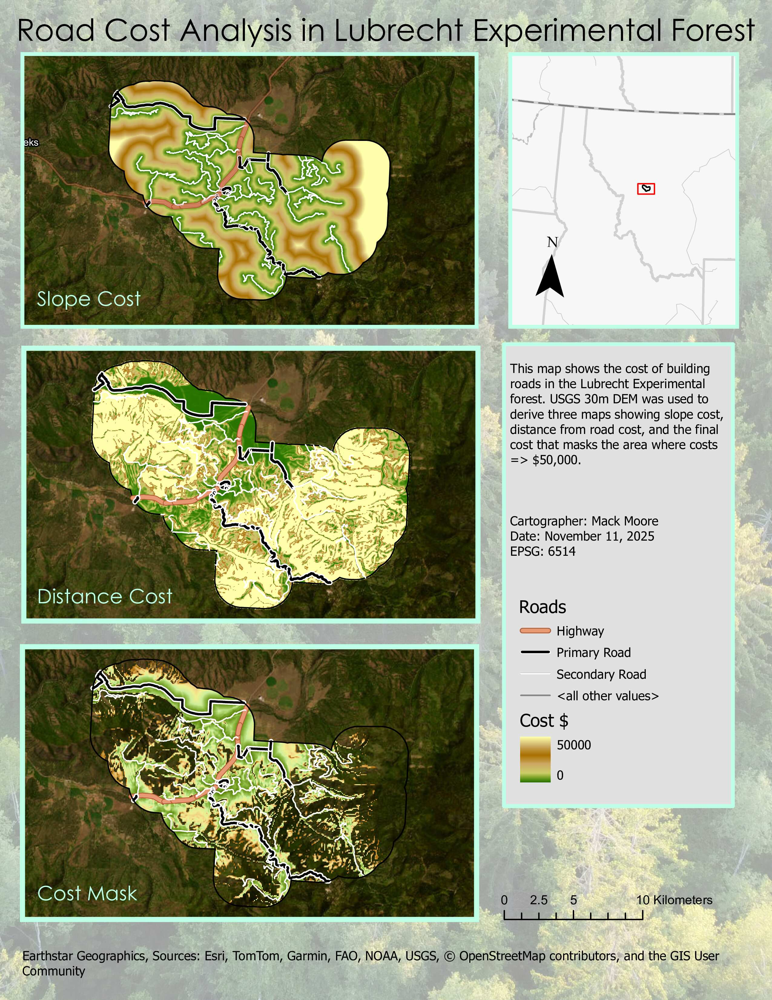

In this analysis of road building cost in the Lubrecht Experimental Forest, my final "Cost Mask" analysis output visualizes the area where road cost is greater than or equal to $50,000.
Tools used: ArcGIS Pro, spatial join, buffer analysis, raster calculator.